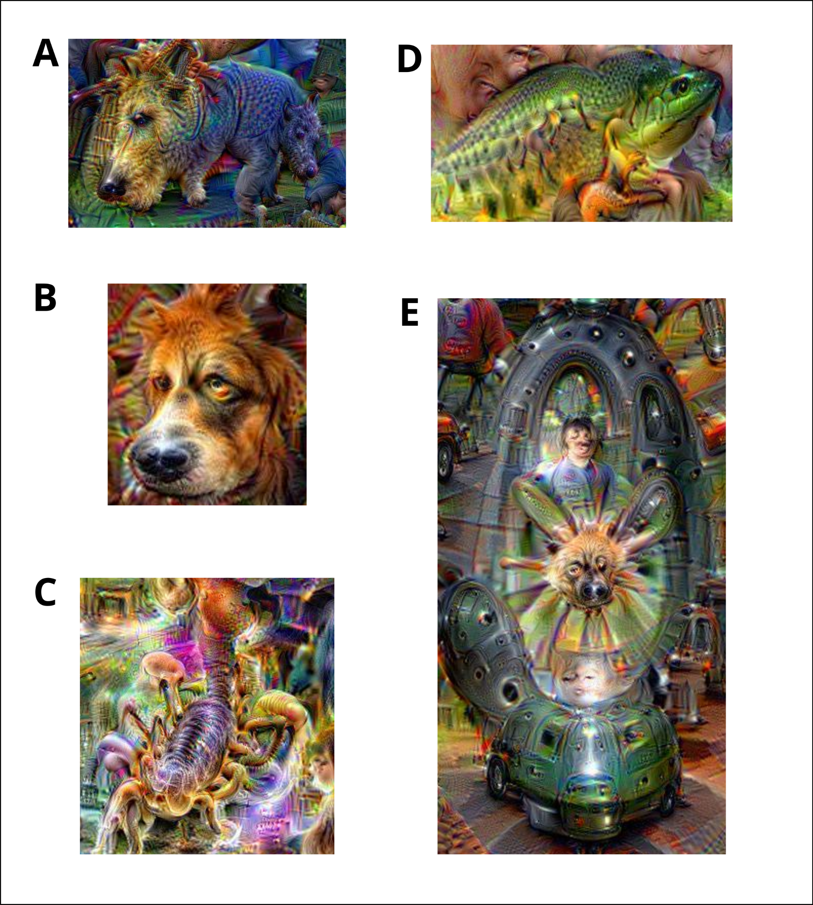

Does Attention Create Form, or Does Form Capture Attention?
Does our attention give rise to the forms we perceive, or do the forms themselves attract and shape our attention?
I know, the question sounds a little cryptic.
But bear with me, because I think the experiment I am about to share makes it surprisingly relevant.
Over the past few days, I have been having a lot of fun experimenting with DeepDream, the image-generation technique introduced by Alexander Mordvintsev and his colleagues at Google in 2015.
DeepDream produces remarkably psychedelic images by amplifying the visual patterns learned by a deep neural network.
The process begins with an ordinary image and a previously trained neural network.
We select a particular layer and iteratively modify the input pixels to increase the activation of the patterns detected by that layer.
With each iteration, the algorithm reinforces the visual features that already trigger a response within the network.
What initially appears as a faint resemblance gradually becomes more prominent, sometimes evolving into elaborate and seemingly recognizable shapes.
You can see the results of this process in the accompanying images.

And this is where things become particularly interesting.
In a sense, DeepDream creates a computational analogy of confirmation bias.
Imagine looking at clouds and noticing a shape that vaguely resembles an animal.
The more you focus on that resemblance, the more likely you are to notice details that support your initial interpretation.
As those details become increasingly salient, your confidence in what you think you see may also grow.
A similar feedback mechanism operates in DeepDream.
The network responds to certain patterns in the input image. The algorithm amplifies those patterns, making them even more likely to activate the same neurons during the next iteration.
A self-reinforcing process emerges.
Of course, this is only an analogy. DeepDream does not possess attention, beliefs, or cognitive biases in the human sense. It performs mathematical optimization on the input image.
Nevertheless, the resemblance between these processes raises some fascinating questions about perception.
Let me give you an example.
If I tell you that I can see a dog's face in image B, can you see it too?
What makes this particularly interesting is that the original photograph, which I took during a vacation, contained no dog.
The animal-like features emerged through the amplification of activation patterns within the inception_4d/pool_proj layer of GoogLeNet.
More precisely, the network responds to visual regularities encoded within its high-dimensional internal representations, while the optimization process progressively transforms the input pixels to reinforce those responses.
When you look at the resulting image, your own perceptual system interprets these shapes through the knowledge and experiences you have accumulated throughout your life.
You recognize something that resembles a dog because certain features correspond to patterns you have previously learned to associate with dogs.
Your attention helps reveal a familiar form within an otherwise ambiguous visual structure.
But now, consider images A, C, and D.
I suspect that many of you will also recognize animals, or at least recognizable fragments of animals, in these compositions.
Why should different people converge toward similar interpretations?
One possible explanation lies in the shared regularities of our perceptual experience.
Throughout our lives, we encounter countless examples of faces, animals, objects, and environments. Our brains learn to identify recurring structural relationships that allow us to recognize familiar forms, even when they are incomplete, distorted, or presented in unusual contexts.
Artificial neural networks trained on visual data also learn statistical regularities, although the mechanisms of biological perception and machine learning are far from identical.
DeepDream creates an intriguing meeting point between these two systems.
The artificial network amplifies patterns learned from its training data.
Our biological perceptual system then attempts to interpret the resulting images through its own learned representations.
And when both systems respond to similar visual regularities, something recognizable can emerge from an otherwise surreal composition.
Perhaps, then, the relationship works in both directions.
Our attention shapes what we perceive, but the forms we have learned to recognize also guide where our attention goes.
This brings me back to the idea of an archetype.
A familiar form is not necessarily a single, precisely defined image stored somewhere in our memory. It may instead reflect a set of structural relationships and recurring features that allow us to recognize variations of the same object.
In this sense, learned visual regularities can act as attractors for our attention, making some interpretations more likely than others.
But what happens when these regularities become more ambiguous?
What happens when an image contains a combination of forms that does not correspond clearly to anything we have previously encountered?
This is why I find image E particularly interesting.
I would be genuinely curious to know what it evokes for you.
And I am deliberately not sharing my own interpretation, because I do not want to influence yours.
After all, that would defeat the purpose of the experiment.
So let me return to the original question.
Does attention create form, or does form capture attention?
Perhaps perception emerges from a continuous dialogue between the structure of what we observe and the expectations we bring to it.
And perhaps DeepDream, beyond its strange and colorful aesthetics, provides a fascinating opportunity to reflect on that dialogue.
What do you see in images A, B, C, D, and E?
If you are interested in exploring these ideas further, I highly recommend two reflections that inspired my own curiosity:
DeepDream Is Blowing My Mind — Memo Akten (2015)
Additional reference: TensorFlow DeepDream tutorial.